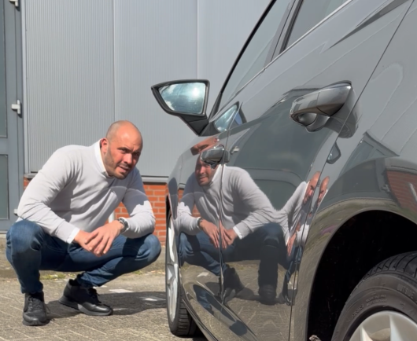

Geen afspraak. Geen dongle. Geen wachttijd. Vul het kenteken in en ontvang direct een inschatting op basis van echte AVILOO-meetdata. Voor €19,95.
Onafhankelijke inschatting van de accuconditie voor je een bod doet. Inclusief degradatieanalyse en ADAC-normvergelijking.
Laat je koper zien wat je accu echt waard is. Verhoog vertrouwen, versnelt de verkoop en voorkomt discussie achteraf.
Geen afspraak. Geen wachttijd. Kenteken invullen en direct een gefundeerde inschatting ontvangen.
Wij koppelen direct aan de RDW-database. Merk, model, bouwjaar en brandstoftype worden automatisch opgehaald.
Op basis van gecertificeerde AVILOO-meetdata van vergelijkbare voertuigen berekenen wij de verwachte accuconditie, degradatiefase en ADAC-normvergelijking. Geen BMS-uitlezing die een dealer kan beinvloeden via een software-update.
Als koper: weet wat je koopt. Als verkoper: bouw vertrouwen op en verkoop sneller. Beide rapporten zijn direct downloadbaar als PDF.
Een autobedrijf verkocht een BMW X3 30e M-Sport. 2,5 jaar oud, 48.000 km. Nette auto, goede staat. De accu toonde 90,7% SoH bij een onafhankelijke AVILOO-meting. Geen afwijkende cellen. Een gezonde accu.
De koper liet de auto staan.
De koper had eerder Moba en Bosch uitlezingen gezien die 100% SoH toonden. Nu zag hij 90,7% en trok de conclusie dat er iets mis was. Hij had het verkeerde referentiekader. Niet omdat hij dom was, maar omdat de markt hem geen eerlijk beeld had gegeven van wat 90,7% SoH betekent bij een 2,5 jaar oude auto met 48.000 km.
Een Moba BMS-uitlezing kost een autobedrijf al €38,50 excl. btw per meting. En ook dan komt er een schatting uit die de dealer kan beinvloeden via een software-update.
| Vergelijking | BMS-uitlezing | AccuRisico Rapport |
|---|---|---|
| Prijs | €38,50+ excl. btw | €19,95 incl. btw |
| Auto nodig | Ja, fysiek aanwezig | Nee, vanaf de bank |
| Gebaseerd op | Wat de auto zelf rapporteert | Echte AVILOO-meetdata van vergelijkbare voertuigen |
| Beïnvloedbaar door dealer | Ja, via software-update | Nee, onafhankelijke data |
| Wat je krijgt | Eén percentage | Degradatiefase, ADAC-norm, aankooptips |
| Beschikbaar | Alleen bij fysieke afspraak | Direct, 24/7, als PDF |
Leest de software van de auto zelf uit. Na een software-update kan de SoH springen van 80% naar 100% zonder dat er fysiek iets is veranderd aan de accu.
Een OBD-tool raadpleegt hetzelfde BMS. Goedkoper apparaat, zelfde beperking. Afhankelijk van de software van de auto, niet van de werkelijke celstaat.
Meet de spanning van elke individuele cel, onafhankelijk van de software van de auto. Een defecte cel die in het gemiddelde verdwijnt is hier wel zichtbaar. TUV-gecertificeerd.
Twee producten, één doel: transparantie over de accu, het enige onderdeel dat niet zichtbaar is in een proefrit.
Jij overweegt een EV of hybride te kopen. Weet voor je bod wat de accu werkelijk waard is.
Jij verkoopt een EV of hybride. Geef je koper zekerheid en voorkom twijfel die deals laat afspringen.
Drie voorbeelden uit onze AVILOO-meetdata die laten zien waarom inzicht in de accu essentieel is.
Op het dashboard: prima. In de diagnose: SoH van 79,1%. Bij 99.500 km hoort minimaal 88% SoH. Het verschil vertegenwoordigt een waardeverschil van meer dan €4.000.
Zelfde leeftijdscategorie, ander laadgedrag. SoH van 91,6% bij 72.000 km. Ruim boven de ADAC-norm van 90%. Een rapport als dit maakt van twijfelende kopers overtuigde kopers.
Dealer toonde 100% SoH. Bosch: 91%. Moba: 91%. AVILOO-diagnose: cel 13 vertoont een anomalie. Geen enkele andere methode had dit zichtbaar gemaakt. Alleen een diagnose op celniveau onthult dit.
Twee voorbeelden waarbij de rapport-inschatting werd vergeleken met een echte AVILOO Flash Test.
Wij verkopen geen auto's. Wij geven inzicht. Dat maakt ons anders dan elke dealer of garagecheck.
Onze rapporten zijn gebaseerd op gecertificeerde AVILOO-meetdata. Dezelfde methodiek die leasemaatschappijen en autobedrijven gebruiken voor objectieve accuwaardering.
Wij hebben geen belang bij de verkoop van de auto. Onze inschatting is objectief en gebaseerd op data, niet op commerciele belangen van de verkopende partij.
Geen technisch jargon. Wij vertalen accudata naar begrijpelijke conclusies. Inclusief de tankanalyse: zo groot is het verschil in de dagelijkse praktijk.
Geen afspraak bij een garage. Geen dongle in de OBD-poort. Geen wachttijd. Kenteken invullen, betalen via iDEAL of creditcard en binnen 2 minuten heb je je rapport als PDF.
Onze rapporten zijn statistische inschattingen, geen gecertificeerde metingen. We zijn daar expliciet over. Voor een gecertificeerde meting op celniveau verwijzen wij door naar een AccuCheck.
Twijfels? Stuur het kenteken via WhatsApp. Pepijn kijkt direct mee en geeft onafhankelijk advies op basis van zijn AVILOO-certificering en 16 jaar automotive expertise.
AVILOO is de Europese standaard voor gecertificeerde accudiagnose. Onze rapporten zijn geijkt op meetdata van honderden vergelijkbare voertuigen. Dezelfde methodiek die wordt gebruikt door leasemaatschappijen en autobedrijven voor objectieve accuwaardering.
De tweedehands EV markt groeit hard. Tegelijkertijd neemt de onzekerheid over accugezondheid toe. Kopers vertrouwen op getallen die ze niet kunnen interpreteren. Verkopers weten niet hoe ze de werkelijke staat van hun accu kunnen aantonen.
ZekerOpWeg is een onafhankelijke adviesdienst voor tweedehands EV en hybride. Geen dealerbelang, geen provisie. Uitsluitend in het belang van de koper of verkoper die eerlijke informatie wil over de staat van de accu.

16 jaar automotive en dealerervaring · Officieel AVILOO-partner · KvK 99323575 · Barendrecht · Werkgebied Zuid-Holland, Noord-Brabant en Utrecht
Kies je rapport en ontvang binnen 2 minuten inzicht in de accu, voor of na aankoop.